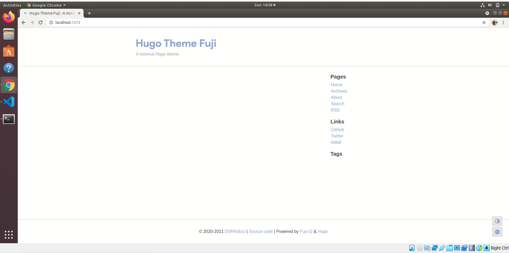

Creating a sample site using hugo themes. I follow this video for reference.
Terminal recording of creating a basic site https://asciinema.org/a/oxY36fi1C213cFFUISoPjrzwx
The theme was found on Hugo Themes and this is the link to the repository that was added as a submodule

The content can be modified by changing the sample/content folder. The content folder in the exampleSite in the theme can be used as a reference.